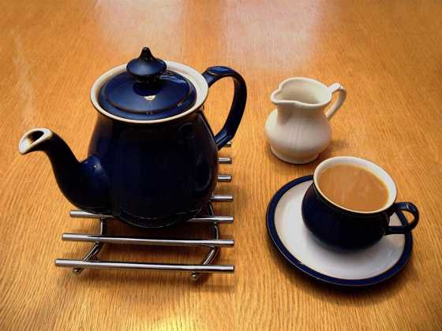
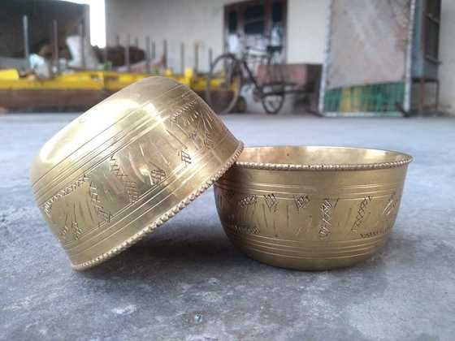
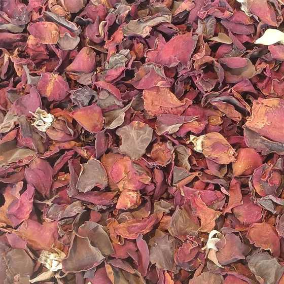
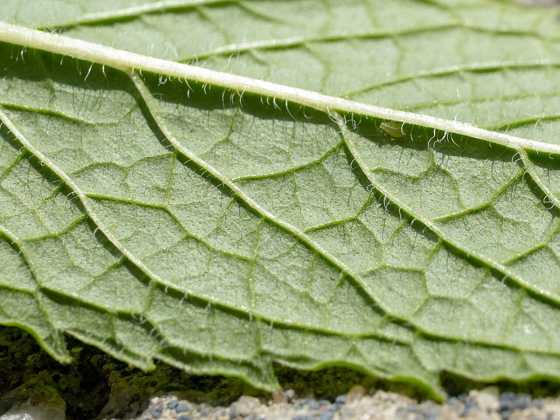
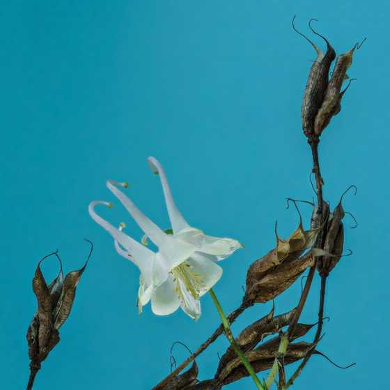

MENU
チャイと、チャイ屋のカレー
Instagramでは、さまざまな種類のチャイ(季節のチャイの案内もあります)と、お店で作るカレーが紹介されています。品目・価格・提供時間などの詳細は準備中です。下の写真はフリー素材のイメージです。

チャイ
種類は豊富とのこと。詳細は準備中。

季節のチャイ
季節ごとの案内あり(Instagramより)。詳細は準備中。

カレー
お店で作るカレー。詳細は準備中。




掲載の写真はすべてフリー素材のイメージで、お店の実際の様子ではありません。
VOICE
口コミ(イメージ例)
イメージ例
湯気の向こうでスパイスの香りがふわり。仕事帰りに、ほっとできる一杯でした。
イメージ例
季節のチャイを選ぶのが楽しみです。カレーと一緒にゆっくりしました。
イメージ例
駅から歩いて行ける場所で、ちょっと寄り道するのにぴったりでした。
※上記は制作側で作成したイメージ例であり、実在のお客様の声ではありません。
ABOUT
滋賀県初のチャイ専門店
「チャイ屋 日月(ひづき)」は、滋賀県東近江市八日市本町にあるチャイ専門店です。Instagramでは「滋賀県初のチャイ専門店」と紹介されています。
店名の「日月」は、太陽と月を思わせる言葉です。このページの昼から夜へ移る配色は、そこから受けた制作側のイメージであり、店名の由来やお店の公式な理念ではありません。オーナーの想いや店名の由来は確認できていないため、準備中とします。




写真クレジット
写真はフリー素材のイメージで、お店の実際の様子ではありません。
- steam.jpg:「Coffee steaming in a mug」 PedanticNarrativeController / CC0 1.0
- brass.jpg:「Brass bowl」 Gurnoor ghuman / CC BY-SA 4.0
- leaves.jpg:「Still life with tea leaves in ceramic cups」 Aleda12 / CC BY-SA 4.0
- wicker.jpg:「Still life with ceramic cups」 Aleda12 / CC BY-SA 4.0
- teaset.jpg:「Nice Cup of Tea」 Vanderdecken / パブリックドメイン
- spoon.jpg:「Wooden Cooking Spoon」 Gre123gr / CC BY-SA 4.0
- flame.jpg:「Flames of fire burning wood close-up (2026)-bs」 Minja Klarić / CC BY-SA 4.0
- herbal.jpg:「Herbal Tea 01」 PagesAndPathsPH / CC0 1.0
- cacao.jpg:「Cacao Pic」 1999jerayu / CC0 1.0
- rose.jpg:「Dried rose petals」 Fumikas Sagisavas / CC0 1.0
- mint.jpg:「Mentha spicata spicata 395472607」 Alex Abair / CC BY 4.0
- pods.jpg:「Aquilegia vulgaris 'Alba' with dry pods - 2018-07-22 focus stack」 Franz van Duns / CC BY-SA 4.0
- cocoa.jpg:「Cocoa-powder-1883108」 thecakeschool / CC0 1.0